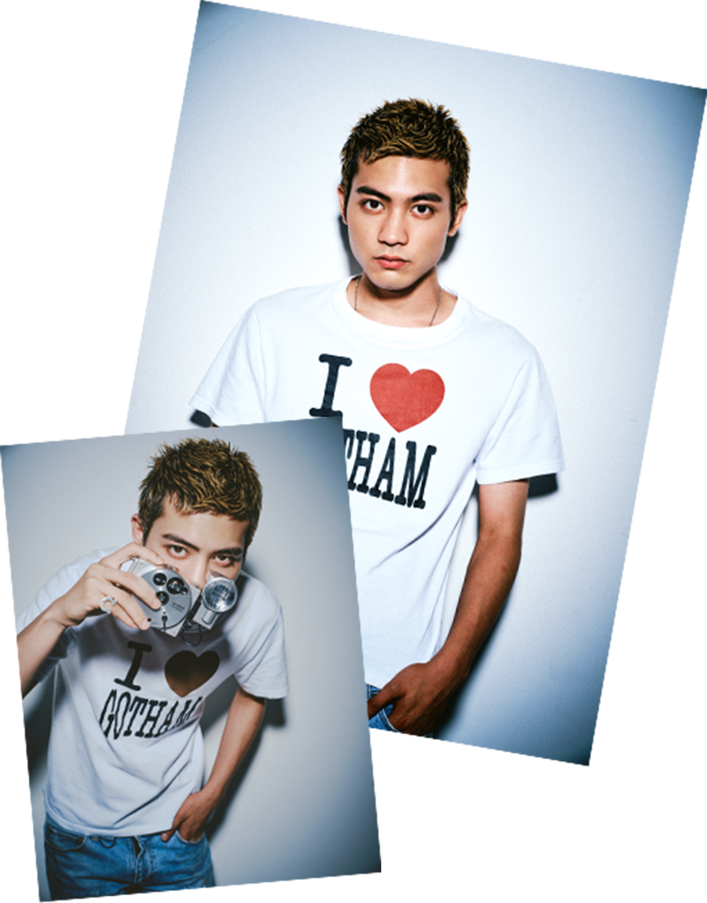

板垣 瑞生
日本の俳優、モデルとして幅広く活躍している。1996年10月25日生まれ、東京都出身。10歳のとき、母親と渋谷で買い物中に忠犬ハチ公像前でスカウトされ、芸能活動を開始。フジファブリックのミュージックビデオ出演が初仕事となる。
2014年、映画『闇金ウシジマくん Part2』で映画デビューを果たし、2015年には映画『ソロモンの偽証』で約1万人の参加者の中から準主役に選ばれ注目を集める。この演技が評価され、日本映画批評家大賞新人男優賞を受賞した。また、2014年から2020年まで、ボーカルダンスユニットのメンバーとしてアイドル活動も展開。多くのファンに支持され、アイドルとしても大きな成功を収める。
2024年3月に所属事務所を退所。以降はフリーランスとして活動。Twitchでのゲーム実況配信など、新たな分野にも挑戦している。
趣味は音楽鑑賞や映画鑑賞で、特に洋楽に詳しい。多彩な趣味を持ち、好奇心旺盛な性格が魅力のひとつであり、今後もさまざまな分野での活躍が期待される注目の俳優である。
映画出演
| 2014年 | 映画『闇金ウシジマくん Part2』 |
|---|---|
| 2015年 | 映画『ソロモンの偽証』で約1万人の参加者の中から準主役に選ばれ注目を集める |
| 2019年 | 映画『初恋ロスタイム』で映画初主演を果たす |
ドラマ出演
| 2015年 | NHK大河ドラマ『花燃ゆ』で初出演 |
|---|---|
| 2016年 | NHK大河ファンタジー『精霊の守り人シーズン2・3』 |
| 2020年 | NHK連続テレビ小説『エール』 |
| 2020年 | NHK大河ドラマ『麒麟がくる』 |
ミュージックビデオ出演
| 2012年 | フジファブリック『Light Flight』 |
|---|---|
| 2013年 | DEEN『二十歳』 |
| 2015年 | 瀧川ありさ『夏の花』 |
広告出演
| 2012年 | 富士通『FMV』 |
|---|---|
| 2016年 | アディダス『adidas bag』 |
| 2017年 | ロッテ『Fit’s』 |
| 2019年 | ホットペッパービューティー『春、変わる時』 |
| 2019年 | アンファー『スカルプDまつ毛美容液』 |
| 2019年 | ABC MART『サマーサンダルコレクション』 |
| 2021年 | 資生堂『ウーノ スキンバリアローション』 |
| 2021年 | コンタクトレンズ『メニコン』 |
| 2021年 | Yohji Yamamoto GroundY × NEW ERA 21-22 A/W |
受賞歴
| 2015年 | 日本映画批評家大賞新人男優賞受賞 |
|---|---|
| 2023年 | 第16回日本シューズベストドレッサー賞 男性部門賞 |